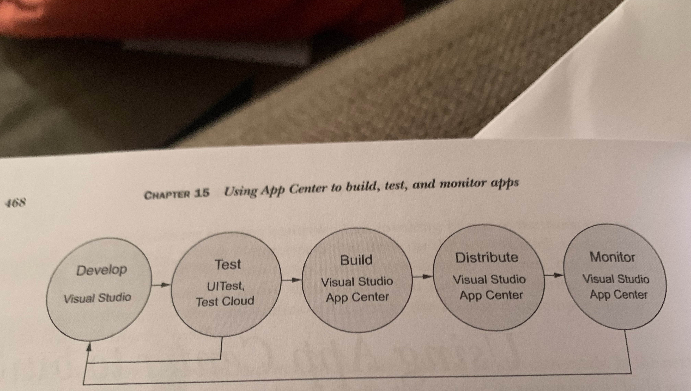

Xamarin in Action - Chapter 15 - App Center
Woah we are on the penultimate chapter, would you believe it? Time flies when you are having fun! This chapter is all about Visual Studio App Center which is like a "Mission Control for apps" as Jim puts it. It's a place where you can achieve multiple functions in one place. There is a quite common image used by Microsoft to describe the lifecycle in Xamarin:

Image taken from the book itself
So far the book has talked us through the first couple of steps but App Center allows us to complete the final ones. That is a lot of cool stuff, so yay for App Center. This chapter looks at the build, test and monitor steps.
Section 1 introduces App Center. At time of writing, some of the points in the chapter on accessing your profile settings and sending a Set Password email are actually incorrect.
You can access the profile settings by clicking your name in the bottom left like mine appears. The email button doesn't seem to be present (I tried on my account and a new temp one I made) but you can set a password in here which is the aim of the game.
Subsection 1 moves on to Apps. In App Center you create an app for each project and each platform that you want. You may create an app as one in many ways but in App Center they are considered separate. You can see an example of this in my screenshot above where I have Android, iOS and UWP apps for one app I am working on. Amazingly, with Microsoft so determined to make their products as available and helpful to all, App Center supports a huge variety of mobile apps not just Xamarin. Yup that means native in Objective-C, Swift, Java and React-Native. #InclusionIsn'tJustAboutPeople!
For each app there are a number of services available:
-
Build - App Center can connect to a source code repository (Github, VSTS and Bitbucket at time of writing) and for each branch, create a build with a specified build configuration either manually or when a change is pushed. You can even sign it with your Keystore or Provisioning Profile.
-
Test - There is actually a huge datacentre in Denmark with a rack full of phones and tablets to allow you to test your UITest on a number of devices, screen sizes and OS versions. App Center can configure and start this off for you.
-
Distribute - Once there has been a successful build, App Center can distrubute your app either to a group of beta testers or the relevant application store. Beta testers will receive an email with a link to download an update or a notification in the app if you set that up. But this is the topic for Chapter 16.
-
Crashes - Let's face it, every app crashes sometimes, even famous ones like Firefox (my one crashes regularly on Android). There is an SDK available that you can use that will report details whenever a crash occurs on a user device. Of course this will open happen once the app is open again and online to send it up to the cloud.
-
Analytics - This is important. Not for Facebook style targeted ads or using your data in elections but because you want your app to be the best possible for users. If there are areas users spend a lot of time or features not used as much you can see what to focus on. This might mean making it easier to access something or removing it and spending your energy focusing on popular features. That is entirely your choice but the information you will receive from analytics is how you make these kinds of decisions. Plus it covers stuff like location of users so if you are popular in one country, you might decide to offer it in their native language as well.
Subsection 2 is about users and organisations. As you can imagine, when you signed up to App Center, this created an individual user and assigned any apps you made to you. However you can also be part of an organisation which can assign groups of users and permissions.
Subsection 3 is about the API. Did you know that the API for achieving this functionality was actually created before the web interface we are using? I didn't! But this revelation is not only a fact you can break out at parties (because you know, why not?) but it means that there are RESTful API's available to achieve anything you can do in the web portal. This means you can actually integrate App Center into an existing CI system. For example if you use Jenkins, you can replace your current building steps with calls to App Center to take advantage of the service. Cool or what!
Subsection 4 just explains that there is also CLI tools available for the same thing and that more info can be found in the ever awesome and open source Microsoft Docs. Subsection 5 just lets you know that there is a support centre built right into the website. Just click the speech bubble icon currently in the botrom right, write a chat message and someone will get back to you with help.Subsection 4 just explains that there is also CLI tools available for the same thing and that more info can be found in the ever awesome and open source Microsoft Docs. Subsection 5 lets you know that there is a support centre built right into the website. Just click the speech bubble icon currently in the botrom right, write a chat message and someone will get back to you with help.
Subsections 2 and 3 walk you through creating new apps in App Center for both Android and iOS complete with useful as ever photos. As ever with these things, stuff changes. In the book it refers to a 'Set Up Branch' button but on mine it was called 'Configure Build' but the resulting slide out menu is the same so no panic.
Section 3 talks about something I probably have the least experience with, Test Cloud. This is because except for a 30-day trial when you first sign up, Test Cloud is a paid product. This might seem irritating but when you consider what you can do (run your UI tests on a large array of phones and tablets with various screen sizes and OS versions all based in the cloud) at the touch of a button almost, you can forgive them for charging. So many other features are totally free after all.
After a quick intro to the service that covers what I mentioned above in Subsection 1, Subsection 2 moves on to preparing your app (in this case Countr) to be tested. This involves providing Test Cloud with a signed and packaged application. On Android this is a release build but on iOS it needs to be a debug build so that Calabash, the underlying technology, is enabled. Jim explains how to download the package from App Center for a build on each platform, build locally and compile the UI tests.
Onto Subsection 3 and a fun part, configurating Test Cloud. This means you get to pick what subset of devices and OS's you want to use. The world's your oyster! Sadly I have already used my free trial so can't do it along with you but take it from me, it's a blast! It can actually be quite nostalgic when you see some of the older devices.
The remaining parts of Section 3 will get you set up running your tests from the command line and viewing the results. Lots of pretty screenshots from Jim here.
Section 4 is about analytics. As I touched on before, this is really helpful to give you feedback for any crashes your user experiences as well as learning more about your audience.
Subsection 1 goes through how to add these features to your app. It's as simple as adding a Nuget package and applying some configuration to link it to your App Center. This is done in the SplashScreen class on Android (earliest possible time) and AppDelegate class on iOS.
Subsection 2 shows you where in App Center you can learn about your audience:
-
Active Users - This is the number of unique devices using your app for the past day, week and month.
-
Engagement - This shows how many people return to your app and how long for. This gives you a good indication of use and quality of experience in their eyes. It is the virtual equivalent of the saying "vote with one's feet".
-
Devices - this part shows you the top 4 devices that have used your app.
-
Country/Region and Languages - This shows where in the world users who are using your app are located. This is great if you discover you might want to support other languages besides English. Also if you have databases in the cloud, you might wish to make versions available closer to them in the world to allow for better performance. Be aware that this data is taken from mobile network info from a SIM card so this won't work for devices without cellular data.
Now adding the SDK's and configuring it to start tracking is a great start, but the key part of the analytics besides crashes will be actually getting granular data about how users are interacting with your application. This is where Subsection 3 comes in. The great example in the book that relates to our app is highlighting a possible feature we haven't thought of. If users are constantly deleting counters and then re-adding them with the same name, it might well be that they are wanting to reset the counter and we need to add a feature into Countr to support that.
The simplest event tracking you can do is to track a named event. In Countr this might be when a user clicks to add a new counter. This is what you will go ahead and do with guidance. You can then move on to adding data about these events using a string key-pair dictionary. So instead of just logging the event of adding a new counter, you can report what the user called this new counter.
Once this is done, you can go ahead and see the results in App Center. For each event you can drill down into it and get some further information:
-
Counts - This shows how often that event was triggered by the user interacting with your app.
-
Event Properties - you are able to set up to 5 properties for each event and this is where you can view this data.
Subsection 4 moves on to crash reporting. As I mentioned earlier, crash reporting is vital to know where bugs might be in your code and allow you to fix it. You will actually deliberately write a crash in the app temporary to allow you to see this in App Center. You will get to see really good detail of where the crash occurred, exactly where you told it to happen ;)
Wow we have made it! Now you know how to build, test and analyse your app. In Chapter 16 you will learn how to distribute it. That is the final step..of the whole book! As you have seen this chapter, App Center is a great way of carrying out multiple tasks linked together without much effort required post setup.